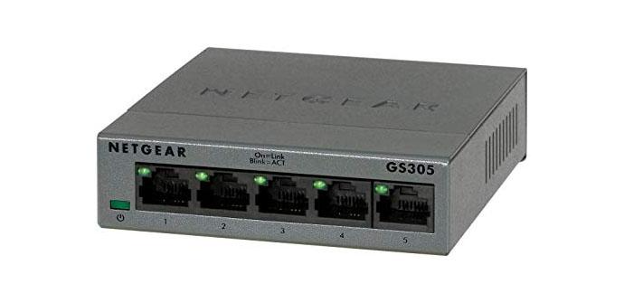
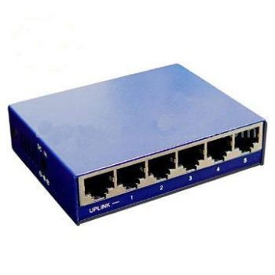
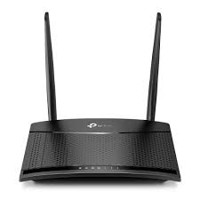
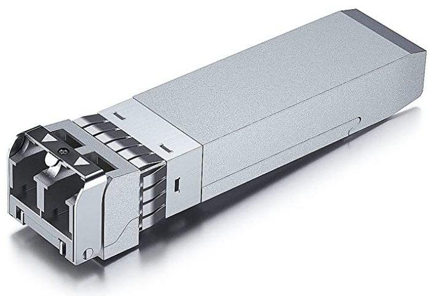
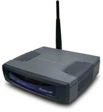

HubUn Hub es un dispositivo de red que permite centralizar diferentes
nodos de una red de computadoras. Su función principal, establecer unaconexión entre un número
indefinido de computadoras y permitir el intercambio de datos.
|

|
SwitchUn switch de red es un dispositivo que permite la conexión de múltiples
dispositivos en una red. Los switches son diferentes de los routers, que son dispositivos que permiten
la conexión de múltiples redes. Los switches son ampliamente utilizados en redes de área local (LAN)
para conectar dispositivos como ordenadores, impresoras, servidores y
dispositivos IoT (Dispositivos que se conectan a internet).
|

|
RouterUn router es un dispositivo que proporciona Wi-Fi y que generalmente está
conectado a un módem. Envía información desde Internet a los dispositivos personales, como computadoras,
teléfonos o tablets. Los dispositivos conectados a Internet de tu casa conforman la red de área local (LAN).
No confundir con un Switch, un switch gestiona el tráfico interno dentro de una red local, mientras que un
router dirige el tráfico entre redes diferentes. Un Switch de capa 3 es un Router y un concentrador de capa 3
también es un Router.
|

|
TranceptorUn transceptor, término derivado de la combinación
de las palabras «transmisor» y «receptor», es un dispositivo electrónico utilizado en
comunicaciones para transmitir y recibir señales. Este componente es esencial en una amplia
variedad de sistemas de telecomunicaciones, desde redes de telefonía móvil hasta redes de ordenadores.
|

|
Bridgeun bridge (puente) es un dispositivo que conecta dos o más segmentos de red,
operando en la capa de enlace de datos del modelo OSI (capa 2). Su propósito principal es filtrar el tráfico
de la red, transmitiendo o bloqueando paquetes de datos (frames) basándose en las direcciones MAC (Control de
Acceso al Medio) de origen y destino. Al hacerlo, ayuda a gestionar el tráfico en una red, reduce la congestión
y aumenta la eficiencia de la red al segmentarla lógicamente.
|

|